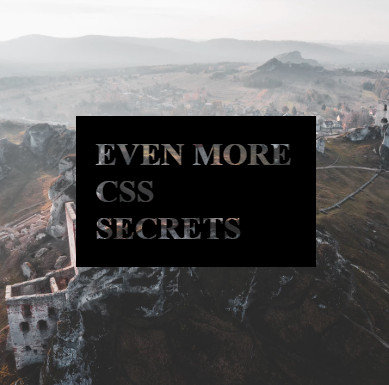
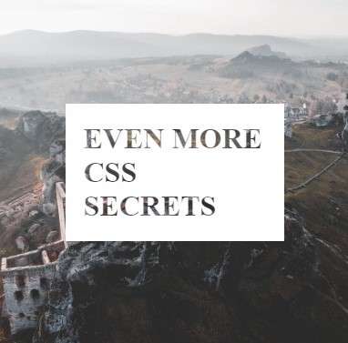

CSS
div {
margin: 0 auto; - выравнивание по центру и очистка margin
calc(100% - 200px); - расчет значения
width: auto; - возвращение ширины к исходному значению
border-radius: 50%; - задание круга
white-space: pre-wrap; - разрешить перенос строк в pre
background: linear-gradient(#e66465, #9198e5);
visibility: visible;
-webkit-text-stroke: 2px black;
text-rendering: optimizeLegibility;
-webkit-font-smoothing: antialiased;
-moz-osx-font-smoothing: grayscale;
}
.item:before {
content: '\f219';
font-family: fontawesome;
}
pre {
tab-size: 4;
}
::-webkit-scrollbar { width: 7px; height: 7px; }
::-webkit-scrollbar-thumb { height: 50px; background-color: rgba(255,255,255,0.7); border-radius: 3px; }
::-webkit-resizer { background: rgba(255,255,255,0.7); }
::-webkit-scrollbar-button { background-color: #666; }
::-webkit-scrollbar-track { background-color: #999; }
::-webkit-scrollbar-track-piece { background-color: #ffffff; }
::-webkit-scrollbar-corner { background-color: #999; }
body{
margin: 0;
padding: 0;
line-height: 1.75;
}
*, :after, :before {
box-sizing: border-box;
}
Clip-path
Ссылки
webref.ru
bennettfeely.com
Фигуры
div {
width: 300px;
height: 300px;
clip-path: polygon(50% 0%, 100% 100%, 0 100%);
}
Единицы измерения
px - абсолютная единица измерения
% - относительная, рассчитывается относительно родителя
vw - viewport width, относительная, рассчитывается относительно viewport
vh - viewport height, относительная, рассчитывается относительно viewport
em - относительная, рассчитывается относительно родителя (берет значение font-size)
rem - root em, относительная, рассчитывается относительно html (берет значение font-size)
Viewport width (vw). Viewport height (vh)
div {
width: 100vw; - ширина блока 100% от viewport
height: 100vh; - высота блока 100% от viewport
}
vh, vw
- единицы измерения, которые расчитываются относительно viewport
- включают в себя ширину скроллбара
vmin, vmax
div {
width: 100vmin;
height: 100vmin;
}
Display
block - блок
inline - строка
inline-block - блок-строка
table - блочная таблица
table-cell - ячейка таблицы
none - нет
flex - flexbox
grid - grid
Position
div {
position: static; - статичное (стандартное позиционирование)
position: relative; - относительное (положение устанавливается относительно его исходного места)
position: absolute; - абсолютное (отсчёт координат ведётся от края окна браузера, если у родителя не установлено position: relative)
position: fixed; - фиксированное (привязывается к указанной свойствами left, top, right и bottom точке на экране)
position: sticky; - сочетание относительного и фиксированного позиционирования
}
Background
div {
background-image: url(img.png); - путь к изображению
background-repeat: no-repeat; - повторение изображения
background-position: center center; - позиционирование изображения (задние в px и %)
background-size: contain; - изображение полностью помещается в блок
background-size: cover; - изображение заполняет весь блок
background-size: 50%; - задание в %
background-color: #3b3b3b; - цвет фона
background-attachment: fixed; - будет ли прокручиваться фоновое изображение
}
div {
background: color url no-repeat center center / cover;
background: url(img.png) no-repeat center 50%;
background: url no-repeat center;
}
div {
background: url(img.png) no-repeat,
#fff url(img.png) no-repeat 100% 0;
}
@import
Импортировать содержимое CSS-файла
@import "main.css" screen;
Подключение шрифта
@import url(https://fonts.googleapis.com/css?family=Oswald);
span {
font-family: 'Oswald', sans-serif;'
}
@supports
@supports (display: flex) {
//
}
@supports not (display: flex) {
//
}
CSS Filters
div {
filter: blur(5px); - размытие (напрямую к body применить нельзя)
filter: brightness(150%); - яркость, 100% по умолчанию
filter: contrast(150%); - контрастность, 100% по умолчанию
filter: grayscale(70%); - черно-белое, 0% по умолчанию
filter: hue-rotate(90deg); - поворот оттенка, определяет угол, 0deg по умолчанию
filter: invert(100%); - инвертирование
filter: opacity(50%); - прозрачность
filter: saturate(150%); - изменение насыщенности
filter: sepia(100%); - сепия
filter: drop-shadow(10px 10px 3px rgba(100,0,0,0.5)); - добавляет тень к изображениям, учитывая прозрачные участки
}
- Можно применять несколько фильтров
- Первый фильтр применяется к исходному изображению, а остальные к предыдущему
div {
filter: contrast(150%) sepia(100%);
}
Backdrop-filter (draft)
- Аналогичен filter, но работает только с фоном, не трогая сам элемент
- Значения такие же как у filter
div {
backdrop-filter: blur(10px);
}
div {
filter: blur(10px);
}
Функция filter
div {
background: filter (url(), blur(10px));
}
Transition
transition (анимированный переход)
transition: all 0s ease 0s;
1. transition-property - какие свойства анимируются
2. transition-duration - длина анимации
3. transition-timing-function - как вычисляются промежуточные состояния
4. transition-delay - время ожидания перед запуском эффекта
div {
transition: all 0.7s ease-in 0s;
}
div {
background: orange;
transition: all 0.7s ease-in 0s;
}
div:hover {
background: blue;
}
Transform
1. СДВИГ
translate(50px, 50px); - сдвигает элемент на заданное значение по горизонтали и вертикали (положительное значение сдвигает вправо, отрицательное влево)
translateX(50px); - сдвигает элемент по горизонтали на указанное значение
translateY(50px); - сдвигает элемент по вертикали на указанное значение
translateZ(50px); - сдвигает элемент по оси Z на указанное значение
- один параметр translate(): перемещает элемент вдоль оси х
- два параметра translate(): первое значение для оси х, второе для оси у
2. ПОВОРОТ
rotate(15deg); - поворот
rotateX(15deg); - поворот по оси X
rotateY(15deg); - поворот по оси Y
rotateZ(15deg); - поворот по оси Z
3. МАСШТАБИРОВАНИЕ
scale(1.2); - масштабирует элемент по горизонтали и вертикали
scaleX(1.2); - масштабирует элемент по горизонтали
scaleY(1.2); - масштабирует элемент по вертикали
scaleZ(1.2); - масштабирует элемент по оси Z
- один параметр scale(): изменение размеров элемента одинаково по высоте и ширине
- два параметра scale(): первое значение изменяет размер элемента по горизонтали, второе по вертикали
4. НАКЛОН (ИСКАЖЕНИЕ)
skew(15deg);
skewX(15deg); - наклоняет элемент на заданный угол по вертикали
skewY(15deg); - наклоняет элемент на заданный угол по горизонтали
- один параметр: элемент искажается по горизонтали;
- два параметра: первое значение искажает элемент по горизонтали, второе по вертикали.
matrix - задаёт двумерную матрицу преобразований
matrix3d - задаёт трёхмерную матрицу преобразований
rotate3d - поворачивает элемент в трёхмерном пространстве
scale3d - масштабирует элемент в трёхмерном пространстве
translate3d - сдвигает элемент на заданное значение в трёхмерном пространстве
perspective - задаёт перспективу
Свойства трансформации
transform - определяет, какая функция будет применяться (translate, rotate, scale, skew)
transform-origin - позволяет изменять точку начала преобразования (работает как background-position)
transform-style - для настройки 3D
Особенности:
1. Не прерывает поток (не влияют на другие элементы)
2. Трансформации можно записывать несколько через пробел
div {
transform: translate(50px, 50px);
}
Animation
animation: none 0s ease 0s 1 normal none running;
1. animation-name - название анимации
2. animation-duration - как долго длится анимация
3. animation-timing-function - как вычисляются промежуточные состояния
4. animation-delay - анимация начинается спустя некоторое время
5. animation-iteration-count - сколько раз должна выполняться анимация
6. animation-direction - должно движение идти в обратную сторону или нет
7. animation-fill-mode - какие стили применяются до начала анимации и после её завершения
8. animation-play-state - проигрывать анимацию или поставить её на паузу
@keyframes move{
0% { transform: translate(0px, 0px); background: blue; }
25% { transform: translate(300px, 0px); background: red; }
50% { transform: translate(300px, 300px); background: gray; }
75% { transform: translate(0px, 300px); background: green; }
100% { transform: translate(0px, 0px); background: orange;}
}
div {
animation-name: move;
animation-duration: 5s;
animation-timing-function: linear;
animation-delay: 0s;
animation-iteration-count: 1;
animation-direction: normal;
animation-fill-mode: none;
animation-play-state: running;
}
div {
animation: move 2s ease infinite;
}
Box-Shadow, Text-Shadow
Тень для блока
div {
box-shadow: 1px 2px 3px 4px #000000;
box-shadow: inset 1px 2px 3px 4px #000000;
}
/* 1px - смещение по горизонтали */
/* 2px - смещени по вертикали */
/* 3px - размытие */
/* 4px - толщина */
Тень для текста
div {
text-shadow: 1px 2px 3px #000;
}
/* 1px - смещение по горизонтали */
/* 2px - смещени по вертикали */
/* 3px - размытие */
Задание нескольких теней для блоков
div {
box-shadow:
-75px -125px 0 40px #6cce74,
75px -125px 0 40px #c18d46,
150px 0px 0 40px #c14745,
75px 125px 0 40px #2e1e5b,
-75px 125px 0 40px #9c37a6,
-150px 0px 0 40px #76bdd1;
}
Font / Text
Шрифты
- Sans-serif (без засечек)
- Serif (с засечками)
- Accident (декоративные)
- Handwriting (рукописные)
- Monospaced (моноширинные)
- Symbol (символьные: fontawesome, stroke, icomoon)
Open Sans
Museo sans
Roboto
Verdana
AG Book
font
p {
font-size: 20px; - размер шрифта
font-style: italic; - начертание шрифта
font-weight: bold; - насыщенность шрифта
}
text
p {
text-align: center | left | right; - горизонтальное выравнивание текста в пределах элемента
text-decoration: none | underline; - оформление текста
text-decoration-color: orange; - оформление текста (цвет линии)
text-decoration-style: solid | double | dotted | dashed | wavy; - оформление текста (стиль линии)
text-indent: 20px; - красная строка
text-transform: uppercase | lowercase; - преобразованием текста элемента в заглавные или прописные символы
}
spacing
div {
word-spacing: 10px; - расстояние между словами
letter-spacing: 4px; - расстояние между буквами
line-height: 1.5; - расстояние между строками
}
fonts (.eot, .ttf, .woff)
@font-face {
font-family: OpenSans; - имя шрифта
src: url(../font/OpenSans.ttf); - путь к файлу со шрифтом
}
Обрезать текст по длине блока
div {
white-space: nowrap; - запрещаем перенос строк
overflow: hidden; - обрезаем все, что не помещается в область
text-overflow: ellipsis; - добавляем многоточие
}
Overflow
Свойство overflow управляет отображением содержания блочного элемента, если оно целиком не помещается и выходит за область заданных размеров.
div {
overflow: auto; - добавление полос прокрутки, если контент не помешается в блок
overflow: hidden; - обрезка контента, если контент не помешается в блок
}
Списки: маркированные и нумерованные
ul {
list-style: list-style-type list-style-image list-style-position;
list-style-type: none | circle ... - изменяет вид маркера
list-style-image: none | url('путь к файлу') - устанавливает изображение
list-style-position: inside | outside - размешение относительно текста
}
Custom Properties
css-vars-ponyfill
- уровень root и область видимости
- резервное значение
Root-level custom properties
:root {
--color:green;
}
body {
background: var(--color);
}
Custom properties referencing custom properties
:root {
--a: var(--b);
--b: var(--c);
--c: red;
}
p {
color: var(--a);
}
Complex values with custom properties
:root {
--a: 1em;
--b: 2;
}
p {
font-size: calc(var(--a) * var(--b));
}
Fallback values
p {
font-size: var(--a, 1rem);
color: var(--b, var(--c, var(--d, red)));
}
Native CSS Mixins
Миксины
Поддреживаются только в Chrome с флагом экспериментовchrome://flags/#enable-experimental-web-platform-features
:root {
--first-mix:{
background: blue;
padding: 10px;
color: orange;
}
}
body {
@apply --first-mix;
}
Примеры
Выравнивание блоков по центру inline-block
<div class="container">
<div class="box"></div>
</div>
.container {
text-align: center;
}
.box {
display: inline-block;
vertical-align: middle;
}
Выравнивание блока по центру (горизонталь, вертикаль) fixed
Обязательно задание width и height
#box {
width: 400px;
height: 700px;
position: fixed;
top: 0;
left: 0;
bottom: 0;
right: 0;
margin: auto;
background: orange;
}
Выравнивание блока по центру (горизонталь, вертикаль) transform
<div class="container">
<div class="box"></div>
</div>
Проценты считаются относительно самого элемента
.box {
top: 50%;
left: 50%;
transform: translate(-50%,-50%);
}
.container {
border: 2px solid blue;
height: 500px;
}
.box {
width: 200px;
height: 200px;
background: gray;
position: relative;
}
Выравнивание текста по центру (горизонталь, вертикаль)
<div class="container">
<div class="text">No result found</div>
</div>
.container {
display: table;
width:100%;
background:orange;
}
.text {
height:500px;
width:100%;
text-align: center;
display: table-cell;
vertical-align: middle
}
Треугольник
div {
width: 0px;
height: 0px;
background: pink;
border-top: 100px solid transparent;
border-bottom: 100px solid transparent;
border-left: 100px solid blue;
border-right: 100px solid transparent;
}
Меню
<header>
<nav class="header-menu">
<ul>
<li><a href="#portfolio">Портфолио</a></li>
<li><a href="#news">Новости</a></li>
<li><a href="#contacts">Контакты</a></li>
</ul>
</nav>
</header>
inline-block
.header-menu ul {
margin: 0;
padding: 0;
list-style: none;
background: orange;
}
.header-menu li {
display: inline-block;
vertical-align: middle;
}
.header-menu li a {
display: block;
color: black;
padding: 12px;
text-decoration: none;
text-transform: uppercase;
transition: 0.7s;
background: gray;
}
.header-menu li a:hover {
background: white;
}
flexbox
.header-menu ul {
margin: 0;
padding: 0;
list-style: none;
display: flex;
justify-content: center;
background: orange;
}
.header-menu li a {
display: block;
color: black;
padding: 12px;
text-decoration: none;
text-transform: uppercase;
transition: 0.7s;
background: gray;
}
.header-menu li a:hover {
background: white;
}
Отключение обтекания float у родительского блока (clearfix)
.parent:after{
content: "";
display: block;
clear: both;
}
Убрать float у блока
.item {
float: none;
}
Убрать пробелы у inline-block
Пробелы между блоками, это пробелы между словами в строке.Ставим font-size:0 для родителя, а для дочерних элементов возвращаем обратно
<div class="container">
<div class="item"></div>
<div class="item"></div>
</div>
.container {
font-size: 0;
}
.item {
font-size: 16px;
}
resize у div
div {
resize: both;
overflow: auto;
}
Задание максимальной, минимальной ширины и выравнивание по центру
.container {
width: 100%;
max-width: 960px;
min-width: 640px;
margin: 0 auto;
}
Псевдоклассы. При наведении на .news показывается кнопка
<div class="news"></div>
<div class="close"></div>
.news {
width: 100px;
height: 100px;
background: orange;
}
.close {
width: 100px;
height: 100px;
background: blue;
display: none;
}
.news:hover ~ .close {
display: block;
}
Обращение к img по наведению на .item
.item:hover img {}
Адаптивность
HTML
Ширина под размер устройства
<meta name="viewport" content="width=device-width, initial-scale=1.0">
<meta name="viewport" content="width=600, user-scalable=yes">
<link href="print.css" rel="stylesheet" media="print">
Указание media в html (в css указывать media не нужно)
<link rel="stylesheet" href="responsive.css" media="all and (max-width: 820px)">
<link rel="stylesheet" href="responsive.css" media="(min-width: 600px) and (max-width: 980px)">
<link rel="stylesheet" href="responsive.css" media="print">
Стилизация браузера на мобильных устройствах
<!-- Chrome, Firefox OS and Opera -->
<meta name="theme-color" content="#000">
<!-- Windows Phone -->
<meta name="msapplication-navbutton-color" content="#000">
<!-- iOS Safari -->
<meta name="apple-mobile-web-app-status-bar-style" content="#000">
Стандартные разрешения экрана
1200px - Large Devices, Wide Screens
1024px - Medium Devices, Desktops
992px - Medium Devices, Desktops
768px - Small Devices, Tablets
640px - Small Devices, Tablets
480px - Extra Small Devices, Phones
320px - Custom, iPhone Retina
1920px - ширина фонового изображения (Full HD)
1280px - ширина изображения для галереи
CSS Media queries
Desktop First
@media screen and (max-width: 480px) {
/* если ширина экрана стала меньше 480px, применяются свойства, написанные здесь */
}
Mobile First
@media screen and (min-width: 480px) {
/* если ширина экрана стала больше 480px, применяются свойства, написанные здесь */
}
@media print
Несколько условий
@media screen and (min-width: 600px) and (max-width: 980px) {
/* экраны от 600px до 980px */
}
html * {
max-height: 1000000px;
}
CSS Selectors
Селекторы и их комбинации
div - тег
.class - класс
#id - идентификатор
header, p - несколько элементов
* - все элементы
div p - вложенные селекторы (каскад)
ul li > span - не все span, а только дочерние span
ul li + li - все последующие элементы li
.class1 ~ div - все div элементы после class1
.class1 ~ * - все элементы после class1
input[type="text"] - все input у которых type="text"
input[name="text"] - все input у которых name="text"
input[class="text"] - все input у которых class="text"
a[title] - все a у которых есть атрибут title
[checked] - выбранный элемент для checkbox и radio
[class|="yes"] - все div у которых class начинается со слова yes, может содержать "-", н-р "yes-class"
[class^="yes"] - выбирает подстроку с начала названия класса, н-р "yesclass"
[class$="yes"] - выбирает подстроку с конца названия класса, н-р "classyes"
[class*="yes"] - выбирает подстроку в любом месте названия класса, н-р "classyesmy"
[class~="yes"] - когда задано несколько классов, н-р "yes tagname"
Псевдоклассы
a:hover - наведение на элемент
a:not(:hover) - увод с элемента
a:active - активный элемент
a:focus - элемент в фокусе
a:visited - посещеннае ссылки
a:link - не посещенные ссылки
p:empty - все пустые элементы p
p:not(:empty) - все не пустые элементы p
p:not(.myclass) - если p не имеет класса myclass
p:first-child - первый элемент (элементы должны быть в wrapper)
p:last-child - последний элемент (элементы должны быть в wrapper)
p:nth-child(2) - второй элемент
p:nth-child(2n) - каждый второй элемент
p:nth-child(even) - каждый четный элемент
p:nth-child(odd) - каждый нечетный элемент
div:nth-of-type(2n) - каждый второй элемент определенного типа
div:only-child - только дочерние div
:nth-last-child - добавление стиля к элементам на основе нумерации в дереве элементов (в отличие от :nth-child отсчёт ведётся от последнего элемента)
:nth-last-of-type - добавление стиля к элементам указанного типа на основе нумерации в дереве элементов (в отличие от :nth-of-type отсчёт ведётся от последнего элемента)
input:checked - выбранный элемент для checkbox и radio
input:enabled - активные элементы
input:disabled - неактивные элементы
input:invalid - поля формы, содержимое которых не соответствует указанному типу, н-р: незаполненные input с required
input:valid - поля формы, содержимое которых соответствует указанному типу
input:optional - input без required
input:required - input с required
input:out-of-range - превышение лимита max в input number
input:in-range - в лимите min max в input number
input:read-only - input с атрибутом readonly
input:read-write - input доступные для изменения
div:target - стилизация элемента target1 при нажатии на ссылку <a href="#target1">Link 1</a>
p:first-of-type - первый элемент определенного типа
p:last-of-type - последний элемент определенного типа
:only-of-type - применяется к дочернему элементу указанного типа, только если он единственный у родителя
q:lang - определяет язык, который используется в документе
:root - корневой элемент документа
:default - элемент по умолчанию, н-р: есть 2 кнопки submit, 1 будет задана по умолчанию
:fullscreen - полноэкранный режим
:indeterminate - если переключатель находится в неопределенном состоянии
Псевдоэлементы
div::before - псевдоэлемент before
div::after - псевдоэлемент after
p:first-letter - первая буква
p:first-line - первая строка
dialog::backdrop - затемнения страницы (авторизация)
input::placeholder - оформление placeholder
p::selection - применяет стиль к выделенному пользователем тексту
CSS Blend Modes
- normal - обычный
- multiply - умножение
- screen - осветление
- overlay - перекрытие
- darken - замена тёмным
- lighten - замена светлым
- color-dodge - осветление основы
- color-burn - затемнение основы
- hard-light - направленный свет
- soft-light - рассеянный свет
- difference - разница
- exclusion - исключение
- hue - тон
- saturation - насыщенность
- color - цвет
- luminosity - яркость
background-blend-mode
background-blend-mode
[codepen] background-blend-mode playground
- Управляет режимами наложения слоев фона, заданного в CSS
- Слои: backround-color, background-image (несколько), linear-gradient
div {
background-color: blue;
background-image: url(...);
background-blend-mode: multiply;
}
mix-blend-mode
mix-blend-mode
- Определяет режим наложения исходного цвета на фоновый цвет или фоновое изображение
<div>
<h1>EVEN MORE CSS SECRETS</h1>
</div>
h1 {
margin: auto;
background-color: black;
color: white;
mix-blend-mode: multiply;
}
div {
background-image: url(...);
}

<div>
<h1>EVEN MORE CSS SECRETS</h1>
</div>
h1 {
margin: auto;
background-color: white;
color: black;
mix-blend-mode: screen;
}
div {
background-image: url(...);
}

CSS Masking
- mask-image
- mask-box-image
CSS Shapes
- shape-outside (module 1)
- shape-inside (module 2)
- shape работают только для float элементов у которых определена ширина и высота
Syntax
Function values
.item {
shape-outside:circle(50%); /* (radius at x y) - окружность */
shape-outside:ellipse(150px 300px at 50% 50%); /* (radius radius at x y) - эллипс */
shape-outside:inset(100px 100px 100px 100px 10px); /* (p1, p2, p3, p4 round 10px) - прямоугольник внутри shape */
shape-outside:polygon(10px 10px, 20px 20px, 30px 30px); /* (p1, p2, p3 ...) - полигон */
}
URL and gradient values
.item {
shape-outside: url(image.png); /* по границе изображения */
shape-outside: linear-gradient(45deg, rgba(255, 255, 255, 0) 150px, red 150px);
}
Keyword values (reference-box)
.item {
shape-outside:none;
shape-outside:margin-box;
shape-outside:content-box;
shape-outside:border-box;
shape-outside:padding-box;
}
Global values
.item {
shape-outside: initial;
shape-outside: inherit;
shape-outside: unset;
}
.item {
shape-margin: 10px; /* margin от shape до контента */
shape-image-threshold: 0.7; /* альфа канал для обрезки по изображению
/* closest-side - расстояние до ближайшей строны (circle, ellipse) */
/* fartest-side - расстояние до дальней стороны (circle, ellipse) */
}